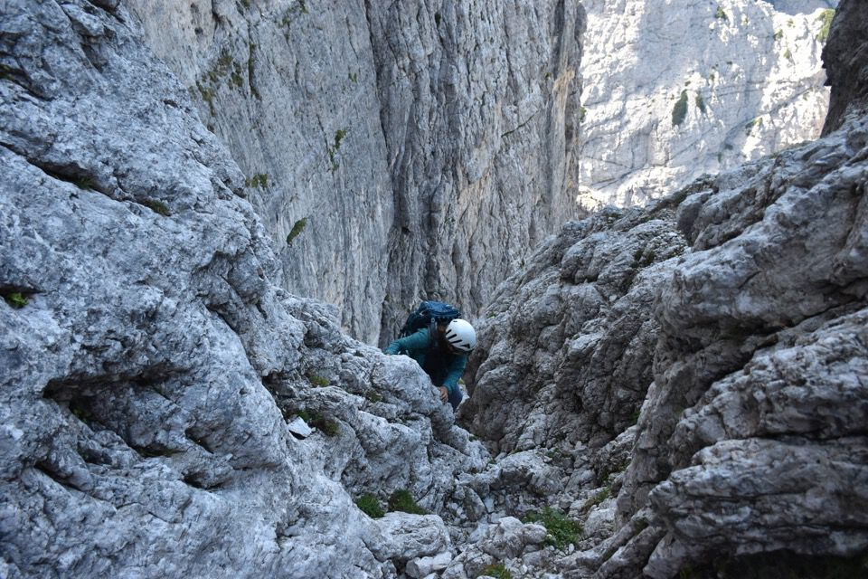
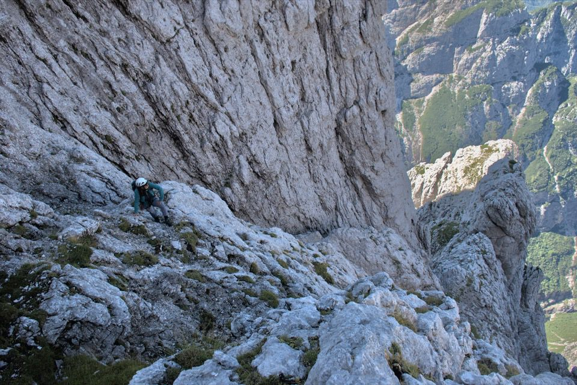
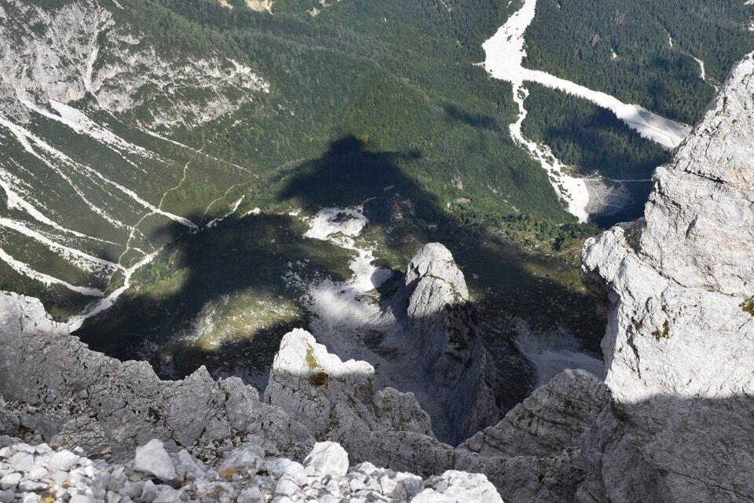
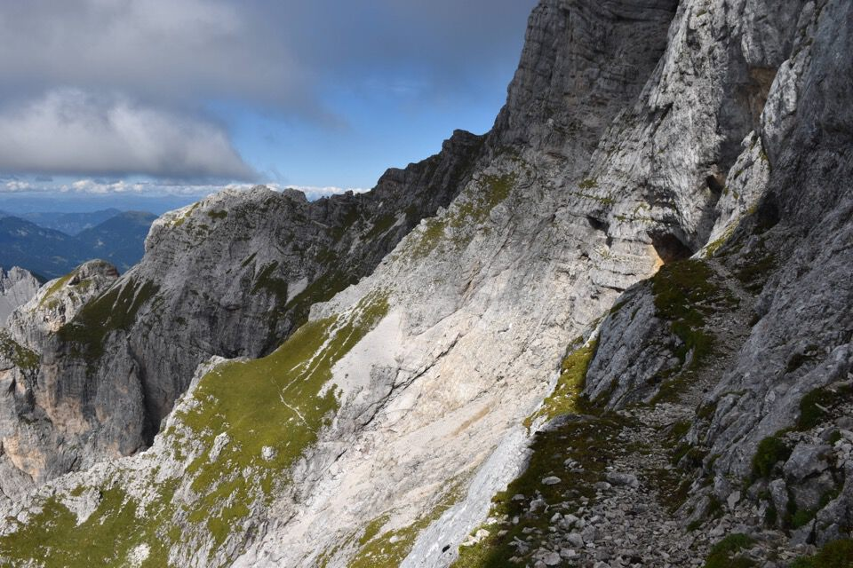
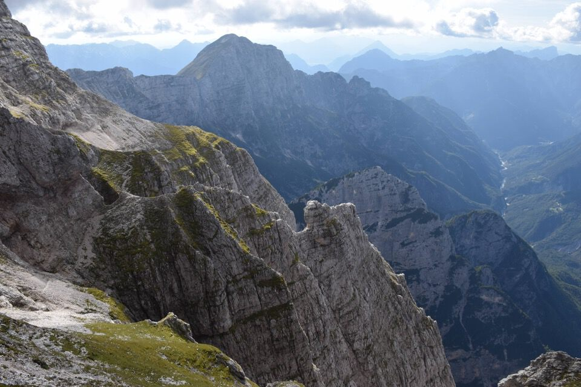
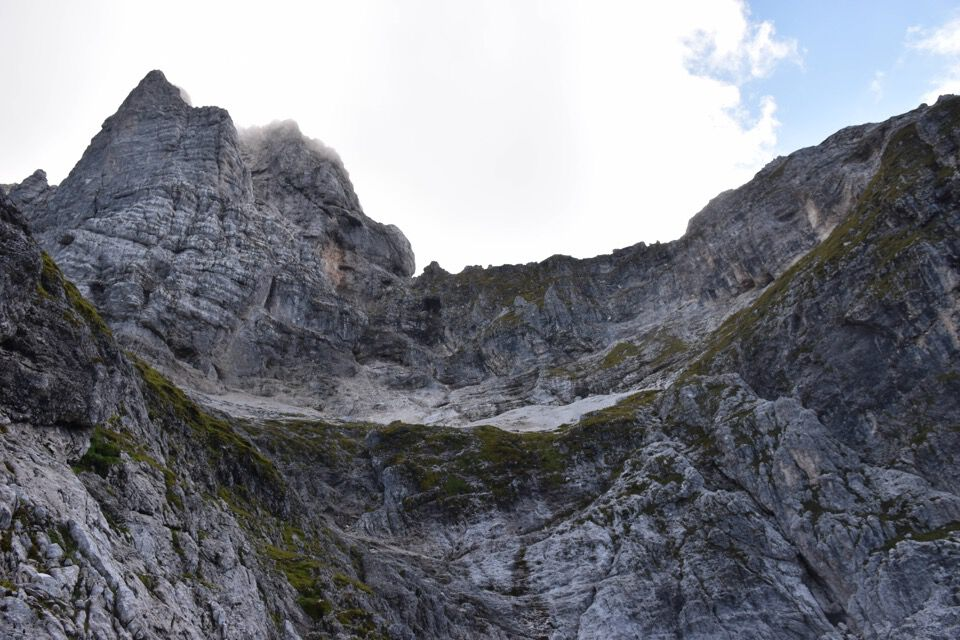

«Ma tornando a bomba, debbo osservare, egregio sig. Professore, che la salita al Jôf dalla valle di Dogna, per discendere in quella di Raccolana, è fra le più belle che si possano fare nelle nostre montagne. Essa è senza pericolo per alpinisti dal piede sicuro i quali non soffrano di capogiro; e noi non sapremo abbastanza consigliarla agli amatori dei monti»
(D. Pecile, Cronaca SAF 1882; d'ora in poi le citazioni saranno sempre prese da qui)
Non si è più abituati a trovare qualcuno per i monti. Figurarsi trovare altre persone alla partenza! Ci s'indigna facilmente.
«Si ascende dapprima un'erta china boscosa che dopo una mezz'ora si trova quasi unicamente rivestita da mughi, in mezzo ai quali l'avanzare riesce faticoso; in 1 1/2 ora il bosco era attraversato e giungevamo sulla roccia, tenendoci sempre a mano sinistra del Rio Montasio.»
L'ambiente è fin da subito magnifico: val Rotta, con la Cresta dei Draghi.
Sul largo cengione che corre alto sopra la Clapadorie, già frequentato anticamente dai valligiani per la caccia. Il pass cjatif era già noto quando l'illustre comitiva della SAF vi mise piede.
Incombono altissime e superbe torri.
«Si procedeva lungo le pareti rocciose del Jôf, per una scarpa che s'innalza fra i 40 ed i 60m sul letto del torrente al limite superiore dei pini mughi e dà un passaggio abbastanza comodo, che solo in un sito diventa un po' più difficile nel così detto pass cjatif.»
Lassù i Curtissons. Il cengione è molto lungo, e in linea d'aria non mancherebbe poi tanto alla forca dei Distèis: chissà se i camosci passano.
Mi sovviene l'avventura della leggenda dell'alpinismo femminile Mira Marko Debelakova, con il marito Edo Deržaj: nel luglio 1929 effettuarono la «discesa all'inferno», ovvero dalla Forca dei Distèis giù in val Dogna lungo la Clapadorie, in 11 ore dalla Forca alle Casere Colle Fratte. Leggi il loro emozionante racconto.
«A kindly shepherd not from Raccolana, of course, but from Gemona told us why the good folk of Pian did not care for visitors. When we told him where we meant to climb (Forca dei Disteis and Clappadorie gorge) he implored us not to attempt it: life was too precious. He told us of horrible accidents in the mountains, and in every sentence assured us that he had been an Alpino for seven years and knew the mountains from end to end; but that he had never seen anything to equal the terrors in store for us. When we nevertheless bade him farewell, he assured us that we were welcome to his cabin at any hour, if so be we should change our minds.»
«Poco dopo si cambiò direzione. Avevamo finito di costeggiare i fianchi del Montasio, o come li chiamano i montanari «le fondamenta» e si prese le roccie di fronte.»
Finalmente posso spiare per bene gli angoli nascosti dello Jôf di Miéz.
«Eravamo arrivati ad una specie di muraglione dall'apparenza inaccessibile, ma di fatto abbastanza facile a scalare, perché la roccia è alquanto accidentata e per sua natura solidissima; sicché vi si avanza senza pericolo appena si trovi un pollice di sporgenza da poter aggrapparsi colle mani ed appoggiare un piede. Questa bella parete rocciosa ha una leggera tinta rossa, onde si riconosce distintamente anche stando a valle.»
Non siamo gli unici frequentatori della Via di Dogna.
Dentro al bivacco Muschi.
«A due terzi di questa specie di muraglione, a venti metri a sinistra della linea seguita, si trova un ciglione piano e spazioso dominante la gola del Rio Montasio ed il sottostante canale di Dogna fino al quale era giunto il Brazzà l'anno scorso. Trovammo qui un mucchio di sassi da lui costruito, una sua carta di visita e un fazzoletto attaccato a mo' di bandiera ad una punta di roccia. La vista che si gode da questo sito è splendida; di qui in fatti appariscono tutte le lontane cime del Cadore e del Tirolo, che si vedono dalla cima del Jôf, e per di più si ha una veduta della valle cosi stupenda, quale forse nessuna altra vi è nelle nostre montagne. Chiamammo questo sito il Belvedere, nome che veramente si merita. Le fatiche di una gita al Montasio da questa parte sono largamente rimunerate dallo spettacolo che si gode da questa punta di roccia, sospesa sopra un abisso profondo un migliaio di metri e circondato da picchi scoscesi e fantasticamente frastagliati che fanno nascere l'idea di un paesaggio infernale.»
«Fin qui la strada era nota; si trattava ora di continuarla e l'impresa non sembrava facile. La nostra guida di Dogna (sulla fede di un buon uomo) ci assicurava che il passaggio doveva essere lungo il Canalone che stava ad oriente del Belvedere. Si tentò ripetutamente la strada da questa parte, attraversando prima una cengia (cornice) sospesa a picco sopra un abisso senza fondo e tanto stretta da trovare appena il posto di mettere il piede scalzo, ché, per attraversarla, avevamo levato le scarpe non solo, ma abbandonato anche gli scarpetti. E questo un passo tale da far rizzare i capelli al solo pensarvi, a chi soffre di capogiro; in realtà non molto pericoloso dacché la roccia è saldissima. Quattro volte tentammo il passaggio in diversi punti, e quattro volte si dovette retrocedere. Cominciavamo a perdere la speranza quando si tentò la roccia dalla parte opposta, dove s' innalzava sopra di noi a piombo un muraglione alto un centinaio di metri. Qui il Siega e Giacomo di Brazzà, ascesi per i primi, trovarono la roccia assai più accessibile di quanto ne avesse l'apparenza; e dopo tre ore di inutili tentativi riuscimmo a superare questo passo. Ci aiutammo un po' colle corde, le quali del resto, per alpinisti provetti, non sono punto indispensabili, specialmente se si sostituiscono alle scarpe gli scarpetti. La maggior difficoltà fu quella di portar su la roba. Infatti un uomo con lo zaino sulle spalle non può senza pericolo superare questo passo. Si dovette aiutarsi colle corde perdendo quasi un'ora in quest'operazione. Al di sopra di questo passo un po' difficile, che abbiamo battezzato col nome di «Ponte dell'asino», la roccia, che si continua a scalare sempre in linea retta verso la cima, è meno difficile, e dopo una mezz'ora si raggiunge un'erta china dove si può ascendere senza adoperare le mani.»
L'ultima parte della rampa mette un po' di soggezione, qui è vietato scivolare e la verticalità si sente. Si può salire per la fessura in centro foto, ma è più semplice avvicinarsi al canale come abbiamo fatto noi. Poi su per paretine e canalini (II, p. II+, due chiodi).

In fondo, soleggiato, il Belvedere.
Sull'imbuto finale: ormai siamo fuori dai guai.
La Sfinge.
E su per il bel canale Findenegg.


Ci fai passare?
È sempre lui.
Laggiù il bivacco Suringar, ai piedi della Torre Palizza, che raggiungeremo ahimè fra diverse ore.

La «Grande Cengia».
 Insondabili precipizi: eppure qualche ora prima eravamo laggiù.
Il poderoso Jôf Fuârt, con evidente in ombra la gola Nord-Ovest.
La misteriosa e arcigna Torre Nord del Montasio, che abbiamo aggirato lungo lo spallone erboso q2458 (dx).
Il catino a Nord della Torre, dove scende la via dei cacciatori itaiani: si segue bene o male il canale scolatore delle acque, infine si scende lungo le rocce in dx orografica.
Dalle memorie di Kugy risulta che negli anni '70 dell'800 i cacciatori di val Raccolana A. e P. Pesamosca e G. Piussi scesero lungo l'odierna via Amalia verso la val Saisera, quindi sconfinando, per andare a recuperare un camoscio abbattuto; uno di loro venne calato con corda lungo l'ultima ripida parete. Ma la via era già stata percorsa vent'anni prima dal Lóuf, «eroe leggendario dei monti di Raccolana».
Vorrei vederci più chiaro: non so la via ferrata attuale passi per i punti più facili, oppure se è stata realizzata così per altri motivi. Di certo i quadrupedi non passano per quei camini verticali: ne abbiamo visti due che salivano stando per rocce più a dx. Che il camoscio passi oppure no non è una semplice curiosità: se passano allora si tratta di una via naturale, e ciò ai miei occhi è una legittimazione. La Via di Dogna è una via naturale.
E ora giù per l'interminabile via: fra cavi, pioli e tratti verticali non ne possiamo più!
In centro foto uno stambecco che sale, e un'altro al bordo dx.
Montasio da Nord: penso a Kugy.
Tramonto sullo Jôf Fuârt, dal Suringar: è ancora lunga.
L'anello così fatto si attesta sui 2200m di dislivello. Sul numero di ore impiegate è meglio tacere.
***